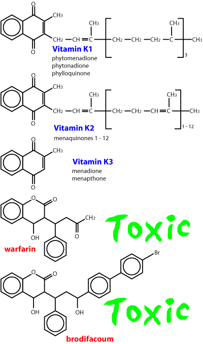
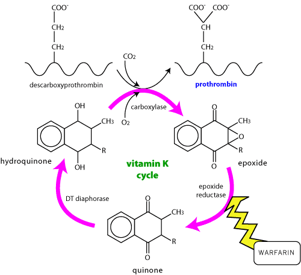

Oral anticoagulants
These are nearly all coumarins, of which warfarin was the first to be widely used (as a rat poison). Some rats have developed resistance to warfarin, and there are a variety of second generation coumarins such as brodifacoum used as rat poisons now. These generally have a much longer duration of action. The most modern drugs in this class (not in NZ yet) have half lives of weeks in dogs. (Toxicology)

Warfarin is typical of the coumarin group. It is a stable analogue of vitamin K. Although widely used as an anticoagulant in people, it is mainly seen as a poison in veterinary practice. It competes with vitamin K for the recycling enzymes and inhibits vitamin K dependent clotting factors (prothrombin, VII, IX, X).

venous thrombosis
thromboembolism in cats
disseminated intravascular coagulation
navicular disease ?
malnutrition, haemorrhage
highly plasma protein bound - can be displaced by other highly bound drugs eg phenylbutazone.
Since it interferes with the production of clotting factors, existing stocks must be used up before any anticoagulant effect is seen - usually 8 - 10 hours.
bleeding
In severe cases a transfusion of fresh blood ± intensive care may be necessary. Phytomenadione (vitamin K1, phytonadione USAN, phylloquinone, etc.) competes with warfarin for the binding site (other forms of vitamin K are much less effective). In mild cases it will start to work in about 30 mins after iv injection but no signs of improvement may be evident for more than 2 hours. It is usual to continue with oral K1 for 10 - 14 days after warfarin overdose; 30 days after brodifacoum. Assessing prothrombin times will show if treatment can be stopped.
Vitamin K comes in many different forms, all of which have many different names. K1 is probably the only one which works in dogs, avoid K3 (menadione, menaphthone) even though it is cheap (it works in chickens and is added to their feed by the ton).
Walker and Royston, 2002, British Journal of Anaesthesia, Thrombin generation and its inhibition: a review of the scientific basis and mechanism of action of anticoagulant therapies. 88, 848 - 863 All you ever wanted to know about coagulation and more!
- parenteral anticoagulants
- anti-platelet drugs
- fibrinolytics
- anticoagulants for collecting blood
| 6 Cardiovascular index |
| |
copyright
Massey University
|